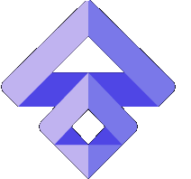

<mat-toolbar>
    
    <h2>
        Site<span>Flow</span>
    </h2></mat-toolbar>

<mat-drawer-container>
    <mat-drawer mode="side" opened>
        <button mat-button class="menu-button">
            <mat-icon>dashboard</mat-icon>
            Panel użytkownika
        </button>
        <button mat-button class="menu-button">
            <mat-icon>businessaccount_balance</mat-icon>
            Budowy
        </button>
        <button mat-button class="menu-button">
            <mat-icon>date_range</mat-icon>
            Kosztorysy
        </button>
        <button mat-button class="menu-button">
            <mat-icon>phone</mat-icon>
            Kontakty
        </button>
        <button mat-button class="menu-button">
            <mat-icon>description</mat-icon>
            Zadania
        </button>
    </mat-drawer>
    <mat-drawer-content>
        <div class="content mat-elevation-z4"><router-outlet></router-outlet></div>
    </mat-drawer-content>
</mat-drawer-container>


